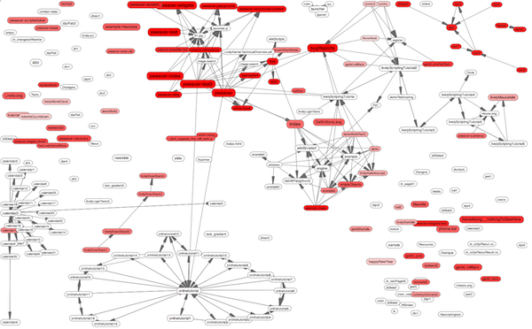

Wikis are Web-based collaborative systems designed to help people share information. Wikis have become popular due to their openness which gives users complete control over the organization and the content of wiki pages. Unfortunately existing wiki engines restrict users to enter only passive content, such as text, graphics, and videos and do not allow users to customize wiki pages. Thus, wikis cannot be used to host or author rich dynamic and interactive content.
Lively Wiki is our development and collaboration environment based on the Lively Kernel which enables users to create rich and interactive Web pages and applications – without leaving the Web. Lively Wiki combines the wiki metaphor with a direct-manipulation user interface and adds a concept for Web programming as well as programming tool support to create an easy to use, scalable, and extendable Web authoring tool. Moreover, Lively Wiki is self-supporting, i.e. the development tools were used for creating its own implementation thereby giving users the freedom to customize every aspect of the system.
http://lively-kernel.org/repository/lively-wiki/index.xhtml
© 2006-2010 HPI Software Architecture Group